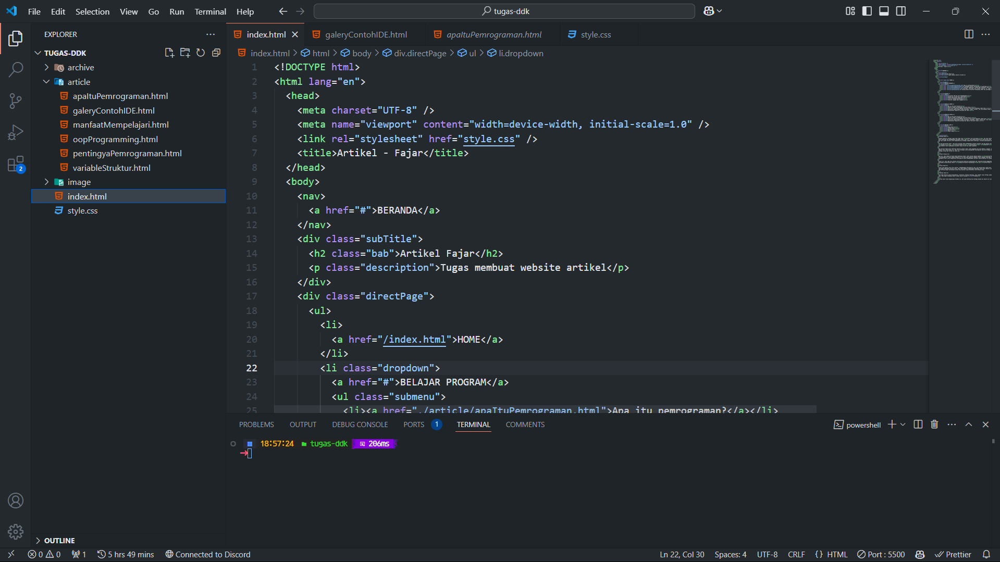

BERANDA
Artikel Fajar
Tugas membuat website artikel
HOME
BELAJAR PROGRAM
Apa itu pemrograman?
Mengapa belajar pemrograman itu penting?
Manfaat mempelajari coding bagi kehidupan sehari-hari dan karier.
Variabel, tipe data, dan struktur kontrol (if, loop).
Konsep Object-Oriented Programming (OOP) dan paradigma lainnya.
GALERY
Screenshot IDE dan Alat Pengembangan
Diagram dan Visualisasi Algoritma
Proyek Pemrograman Sederhana
Ilustrasi Konsep Pemrograman
Kabel Ethernet untuk internet
MATERI MS.WORD
Apa itu Microsoft Word?
Sejarah singkat perkembangan Microsoft Word.
Fitur-fitur utama dan kegunaan Microsoft Word dalam kehidupan sehari-hari.
Penjelasan bagian-bagian utama antarmuka: ribbon, toolbar, tab, dan dokumen utama.
Menyesuaikan tampilan antarmuka dan tema.
MATERI MS.EXCEL
Apa itu Microsoft Excel?
Sejarah singkat perkembangan Microsoft Excel.
Fitur-fitur utama dan kegunaan Microsoft Excel dalam kehidupan sehari-hari.
Penjelasan bagian-bagian utama antarmuka: worksheet, ribbon, formula bar, dan status bar.
Menyesuaikan tampilan antarmuka dan tema di Microsoft Excel.
BENCANA ALAM
Gempa Bumi
Tsunami Besar
Gunung Berapi
Banjir
Tanah Longsor
